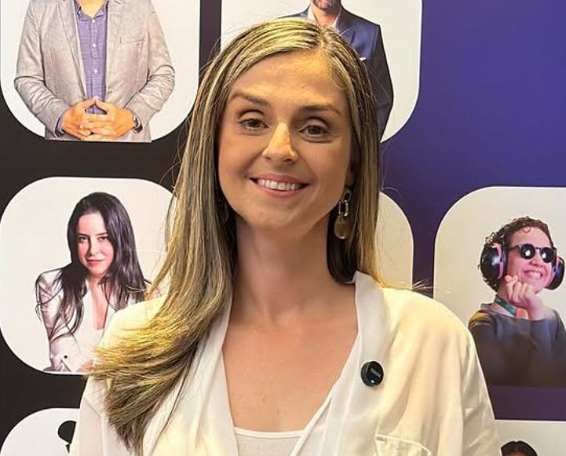
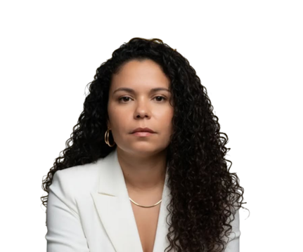
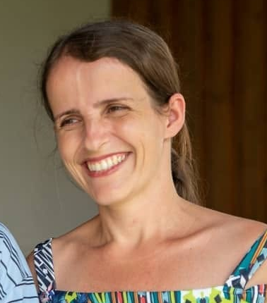

GAIARB
GAIARB
Profissionais e voluntários dedicados ao acolhimento e suporte de famílias atípicas em Rio Bonito.

Fundadora da associação, responsável pela gestão geral e representação oficial do GAIARB. Atua na linha de frente do acolhimento e suporte direto a mães atípicas.

Co-liderança administrativa, apoia na formulação de parcerias estratégicas e no desenvolvimento das ações comunitárias no município.

Gestora financeira, encarregada da transparência, fluxo de caixa e contabilidade dos recursos doados à instituição.
Auxiliar de controladoria financeira, trabalha na auditoria das contas e planejamento econômico de novos projetos.

Coordenadora de comunicação interna, atas oficiais, registros corporativos e organização documental do grupo administrativo.
Apoio nas rotinas administrativas, agendamentos de reuniões e suporte logístico para eventos e palestras institucionais.